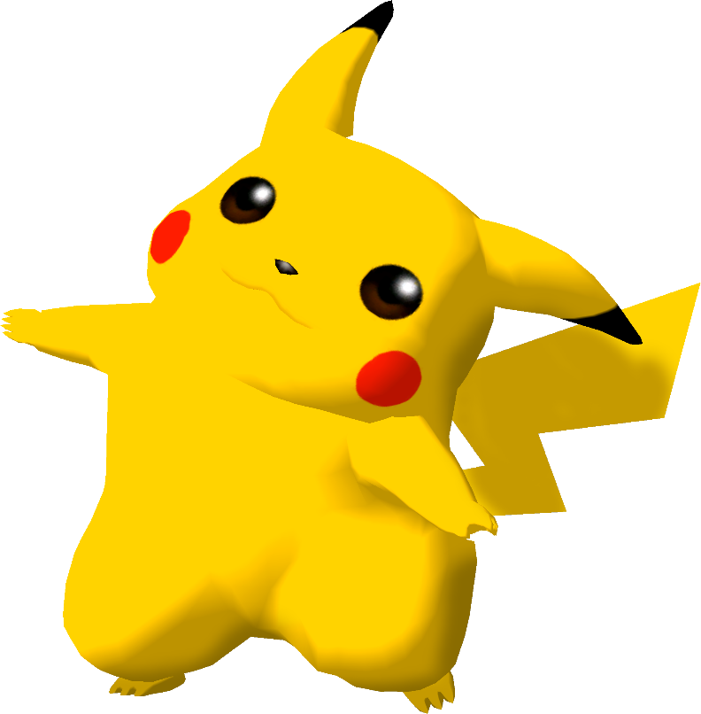

|  | Ranked 9th of tier list : PIKACHU |
| Weight | |
|---|---|
| 20-21st heaviest | |
| Shield stats | |
| Roll lenght | 12th longest |
| Shield size | 25th biggest |
| Grab range | 26th longest |
| Wavedash lenght | 18-19th longest |
| Movement stats | |
| Walking speed | 4-5th fastest |
| Turning speed | 1-3rd fastest |
| Running speed | 3-5th fastest |
| Aerial stats | |
| Jump squat | 4 frames (1st fastest) |
| Short hop | 9-11th highest |
| Aerial speed | 17-18th fastest |
| First jump height | 12-13th highest |
| Seconde jump height | 14-15th highest |
| Total jump height | 6-8th highest |
| Average fall speed | 12th fastest |
| Fast falling speed | 12-14th fastest |
| Falling speed | 12-14th fastest |
| Ledge stats | |
| 0-99% ledge roll | 16th longest |
| 100%+ ledge roll | 15th longest |
| 0-99% ledge attack range | 22-24th farthest |
| 100%+ ledge attack range | 23rd farthest |
| Intangible ledgedash (Optimal) | 13 frames |
| Notable players | |
| Axe, PickaChad | |
| Smashboard forum | |
| http://smashboards.com/forums/pikachu.70/ | |
Pikachu ranks 9th on the current tier list, in the C tier. Pikachu, while nerfed from the original SSB, is still a potent fighter; it has very good speed and plenty of KO options, as it owns the strongest up smash in the game and a quick semi-spike in its up-air. It also has a very long, safe, and versatile recovery. However, Pikachu is strongly held back by a bad range, with its best finishers having hitboxes very close to its body; coupled with sub-par options in the air and a short wavedash, Pikachu overall has a poor approach